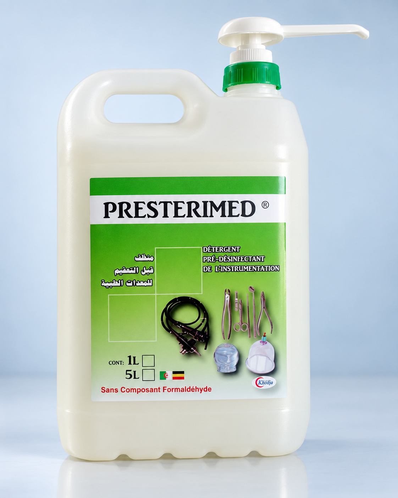
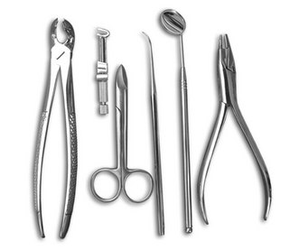

Presterimed
Détergent pré-désinfectant de l’instrumentation chirurgicale et médicale, du matériel thermosensible et d’endoscopie, selon la fiche technique transmise.
Demander des informations
Pour l’instrumentation médicale.
La fiche décrit le nettoyage et la pré-désinfection des instruments chirurgicaux et médicaux, des dispositifs thermosensibles et du matériel d’endoscopie.

Caractéristiques
- Solution limpide de couleur bleue.
- Indiquée comme non corrosive vis-à-vis de l’instrumentation.
- Utilisable en bac à ultrasons.
- pH à la dilution d’emploi : environ 7.
- Stabilité physico-chimique indiquée jusqu’à +70 °C.
Composition
Chlorure de didécyldiméthylammonium, polyhexaméthylène biguanide, parfum, colorant et excipient, selon la fiche fournie.
Préparer, immerger, rincer.
La fiche fournit un protocole de trempage. Suivez les instructions du produit et les procédures de votre établissement.
- Préparer la dilution
Verser 25 ml de produit dans 5 litres d’eau froide ou tiède pour obtenir une dilution à 0,5 %.
- Immerger complètement
Plonger entièrement le dispositif médical. Le temps de trempage conseillé est de 15 minutes.
- Nettoyer si nécessaire
Brosser si besoin ; pour le matériel endoscopique, écouvillonner les parties concernées.
- Rincer et essuyer
Rincer soigneusement à l’eau de réseau de bonne qualité microbiologique, y compris l’extérieur et l’intérieur du matériel endoscopique, puis essuyer avec un champ propre.
Renouveler le bain de trempage au moins une fois par jour, selon la fiche.
Propriétés microbiologiques indiquées.
Les normes et temps de contact ci-dessous sont transcrits de la fiche transmise ; ils ne constituent pas une vérification indépendante.
| Spectre indiqué | Norme ou organisme mentionné | Temps de contact |
|---|---|---|
| Bactéries | EN 1040, EN 13727, NF T 72-171 / SARM (EN 13727) | 5 min |
| Bactéries | NF T 72-190, T72-300 (A. baumannii) | 15 min |
| Mycobactéries | Mycobacterium tuberculosis (B.K) | 15 min |
| Levures / moisissures | EN 1275 (Candida albicans), EN 13624 | 5 min |
| Virus | HIV-1, HBV | 10 min |
| Virus | BVDV (virus modèle HCV) | 5 min |
Formats mentionnés.
Carton de 12 flacons de 1 litre ou bidon de 5 litres avec pompe doseuse de 25 ml.
Produit dangereux.
La fiche indique un stockage de +5 °C à +35 °C. Consultez l’étiquette et la fiche de sécurité avant manipulation.

Informations issues de la fiche Presterimed transmise, qui porte la mention EURL Khodja Laboratoire. Le visuel du bidon est reconstitué d’après sa photo ; l’illustration d’instruments et le pictogramme proviennent du document. Vérifiez l’étiquette, la fiche de sécurité et la documentation à jour avant toute utilisation.